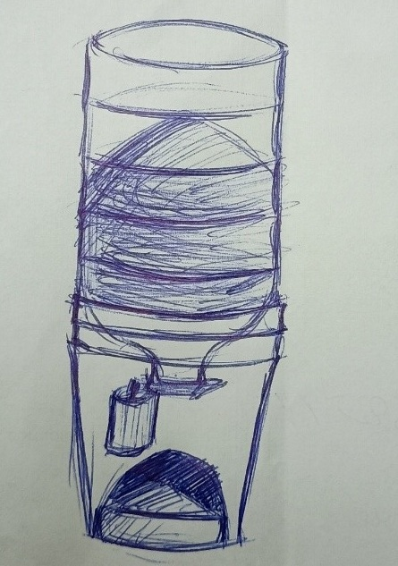
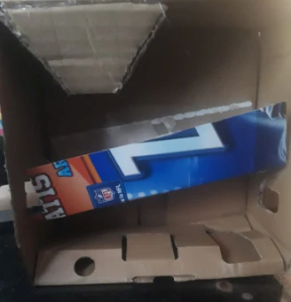

Plano esquemático para dispensador de alimento para mascotas
¡Te queremos ayudar a tener una mascota más feliz y sana!
Es por eso que te entregamos este pequeño tutorial para crear un dispensador automático de alimento para ella. Todo esto construido con materiales de bajo costo, e incluso reciclados.
Materiales necesarios
- 1 Módulo Arduino Uno R3
- 1 Servomotor SG90
- 1 Botellón de agua
- 1 Tineta de pintura usada
- Cartón
- Pistola de pegamento caliente
Pasos para la construcción
1. Despeja la boquilla del botellón quitando el seguro plástico.

2. Haz un agujero en la base del botellón para cargar el alimento.
3. Verifica cómo encajan el botellón y la tineta para montarlos.

4. Realiza un boquete en la tineta para permitir la caída del alimento hacia el plato.
5. Fija el motor al cuello del botellón con una placa de cartón como tapa.

Conexión electrónica y programación
Conecta el Arduino a tu computador y copia el siguiente código:
#include <Servo.h>
Servo myservo;
void setup() {
}
void loop() {
myservo.attach(9); // Conecta el servo al pin 9
myservo.write(130); // Abre la compuerta
delay(1000); // Espera un segundo
myservo.write(90); // Cierra la compuerta
delay(24000000); // Espera 24 horas
}
IMPORTANTE: Los ángulos pueden variar dependiendo del diseño exacto del dispensador.
Montaje interior
1. Construye una rampa con cartón para dirigir el alimento al plato.

2. Haz una pequeña perforación en la tineta para pasar el cable de alimentación del Arduino (puede ser un cargador de celular).
¡Y listo!
Tu dispensador automático está listo para que tu mascota y tú sean más felices 😄